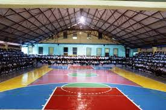

PÁG PRINCIPAL
MI EDUCACIÓN
-
ESCUELA
- Durante toda mi etapa de primaria estudié en el centro de educación básica José Cecilio del Valle,es una
institución pública fue un instituto que me enseñó muchos valores como
respeto,empatía,solidaridad.Inculcaron en mi a ser respetuosa en ese tiempo era un ñina que no sabía
mucho sobre la vida y eso no fue un obstáculo para no aprender de esos valores.Agradezco mucho a mis
maestros que me hicieron una persona llena de valores y aptitud.


-
COLEGIO
- En mi secundaria seguí estudiando en el centro de educación básica José Cecilio del Valle de séptimo
grado a noveno grado.Seguir en este instituto me lleno de mucha alegría para seguir trabajando en cada
día ser mejor.Esta institución tiene un lugar muy especial en mi corazón ha marcado mi trayectoria
académica desde primer grado y cuando salí me sentí muy triste pero quería ser más profesional y ser
mejor. De décimo a duodécimo estoy en el Instituto Marista La Inmaculada sin duda alguna ha sido una de
las experiencias mas bonitas de la vida venir de un pueblo a estudiar a la ciudad ha sido algo de muchas
emociones encontradas la inmaculada es una institución que nos inculcan muchos valores como la
solidaridad,el respeto excelente institución se preocupan por el futuro de los profesionales este último
año tengo muchos sentimientos de dejar esta institución que me a dejado marcado en el corazón sus
valores.Me ha dejado un gran crecimiento personal y académico.
